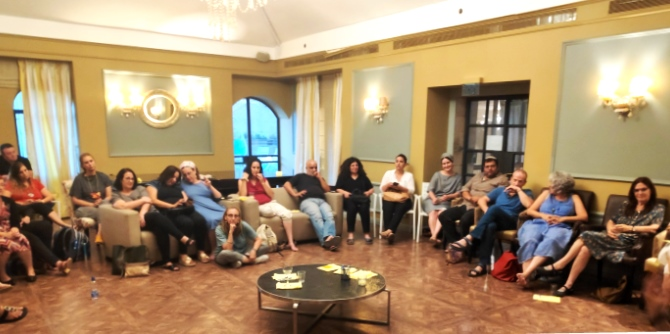

On August 1, at the height of a summer heatwave, as Israeli families were counting down the days to the end of the school vacation and the Israeli economy was in the midst of its traditional summer slumber, graduates of the Mandel Center for Leadership in the Negev embarked on a retreat in Jerusalem. The retreat aimed to further the creation of a Mandel graduate community in the Negev. The experience of learning and sharing together fostered a fruitful dialogue that can serve as the basis for action and leadership processes that will be able to make changes in education, community, and culture in the Negev.
No fewer than 36 graduates participated, a record number for retreats of the Mandel Center for Leadership in the Negev. The group included representatives from almost every previous program, with an all-time high of ten graduates from the first cohort of the Mandel Program for Regional Leadership in Beer Sheva.

The first stop was the Museum on the Seam. Rafi Etgar, the founder and director of the museum, introduced the graduates to the site while giving a harsh critique of today’s younger generation and their lack of tolerance and patience. The central exhibit at the museum was an exhibition of portraits of Jerusalemites; throughout the tour of the exhibit, graduates expressed the opinion that residents of the Negev are more tolerant than their peers in Israel's capital.
The second stop was the Feuerstein Institute. There they met with the director,
Rabbi Rafi Feuerstein, who is the son of the Institute’s founder and inventor of its method, Israel Prize laureate Reuven Feuerstein. Rabbi Feuerstein began by describing the Institute’s staff as “religious zealots” when it comes to the Institute's method for integrating people with severe cognitive disabilities into normative educational and social settings. His description of the method’s success was met with amazement, not only because it was backed up with objective data, but because the participants were also given the opportunity to observe a sample lesson taught by
Avner Sorek, son of
Israel Sorek, a faculty member of the Mandel Center for Leadership in the Negev. The Institute’s director of education, Yaara Yeshurun, assured the participants that the lesson was not a “show for guests,” but rather a routine class.

During the lesson, the participants were shown how by solely using images, it is possible to put forward an accurate and reasoned description of what they depict and the emotions they inspire, in a way that requires a more precise use of words. The students in the class (some of whom have Downs’ syndrome, and others who have moderate-to-high levels of cognitive disability) displayed high ability to describe and to reason.
After a break, the work began. A round of introductions was followed by a question: How is it possible to translate the desire to build a community of Mandel graduates and to bolster the effectiveness of graduates’ acts of leadership into the language of practice, identity, and commitment? A number of moving encounters between graduates emerged in the circles of conversation that were randomly assigned.
During the long Jerusalem night, the graduates got little rest. Inspiring and remarkable cultural initiatives were investigated in the faint moonlight, and the Jerusalem nightlife was found to be surprisingly vital. The graduates did not fall behind. Lively conversations were held over drinks, and their impact was felt in the next day’s closing discussion.

The second day began and ended with a plenum session. Professor Dana Arieli and Israel Sorek spoke about real and imagined memories, while Maskit Hodsman (a graduate of Cohort 2 of the Mandel Program for Regional Leadership in Beer Sheva) and Dr. Itzhak (Kiki) Aharonovich presented a session on mind maps. This new concept was introduced and the participants tried it for the first time in mapping the retreat.
The discussion lasted for 30 minutes beyond the allotted time. The graduates were in no hurry to end this unusual retreat, which rekindled hopes for the Mandel Negev community and its capacity for action and initiative. The great heatwave was not over, but a fresh wind was blowing among the graduates of the Mandel Center for Leadership in the Negev.
{kind=link}